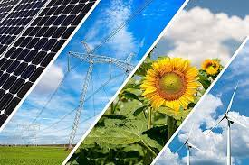

Categories of Natural resources

There are many ways of classifying these natural resources. They can be biotic or abiotic(that is derived from organic materials or inorganic materials). Another way of classification of resources is by the amount of resource available for human consumption. Through this, resources can be classified into exhaustible and inexhaustible natural resources.
Categories of natural resources
- Inexhaustible Natural Resources:
Nature has blessed us with an unlimited supply of resources such as air, water and sunlight. These resources are called inexhaustible resources. They are also called renewable resources.
- Exhaustable natural Resources:
As the human population is increasing at an astounding rate, we have reached a number of 7.4 billion today! Naturally, this means that we are utilizing more and more natural resources. If we go at this rate, we will soon reach a day when nature will not be able to provide us with resources such as plants and trees, animals, mineral ores, fossil fuels such as coal, petroleum and natural gas. Thus, these resources are exhaustible. These resources are called exhaustible or non-renewable resources.